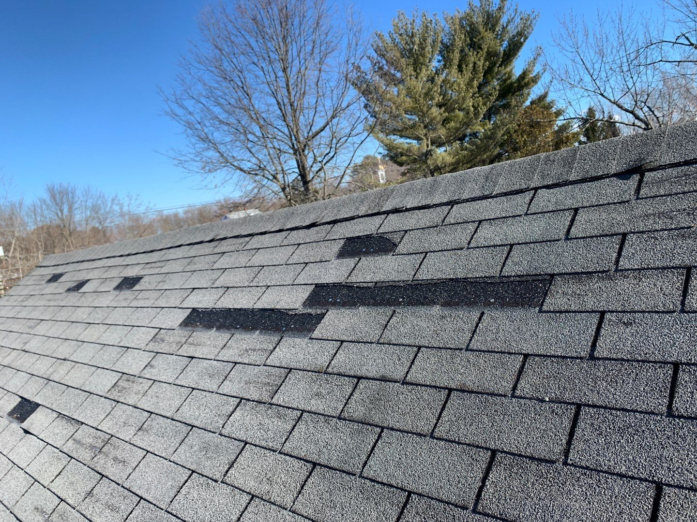
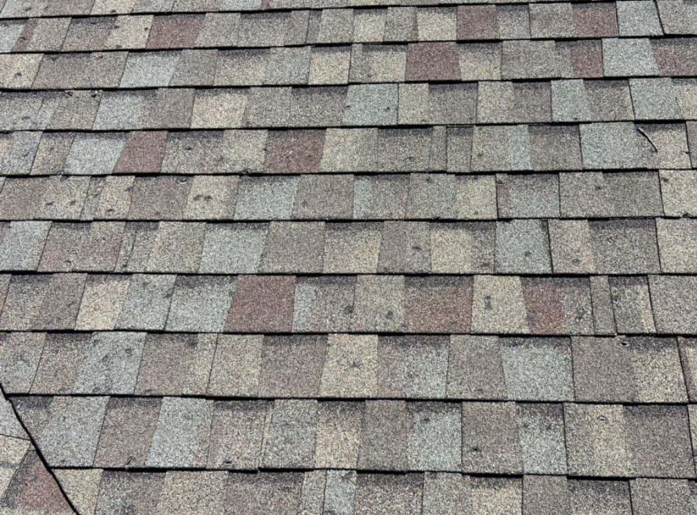
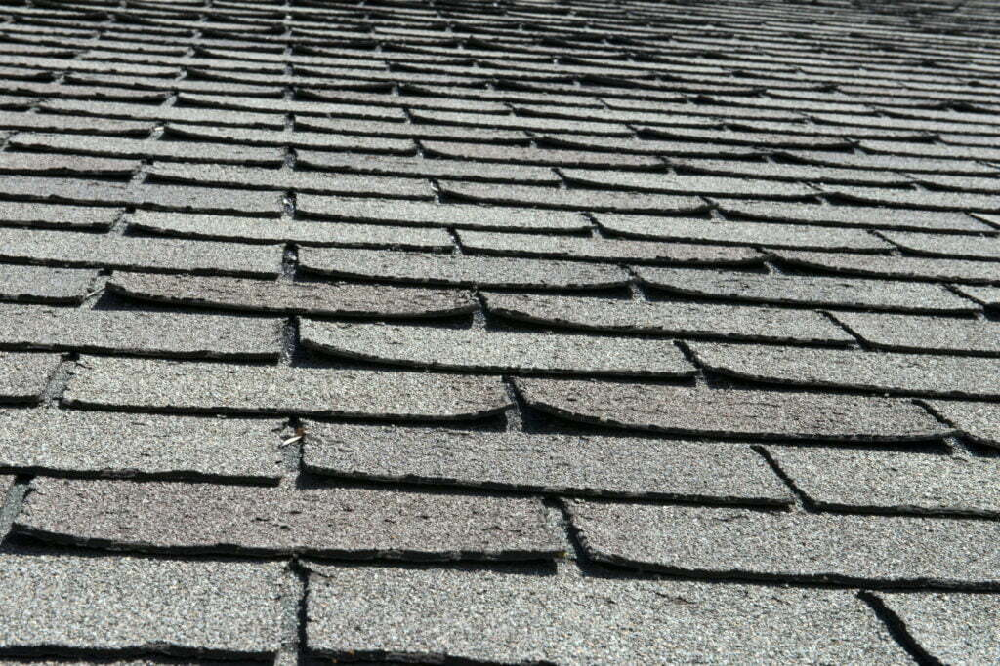
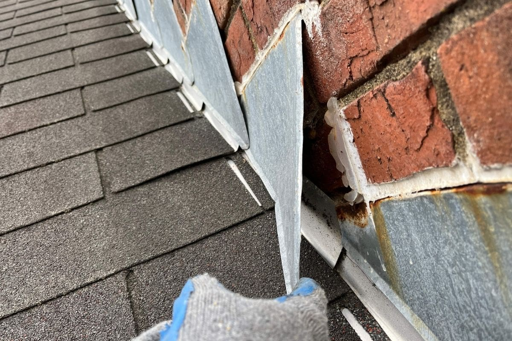

Missing or Damaged Shingles?
Wind damage often removes or damages shingles, leaving your roof vulnerable to water damage. Get connected with contractors who can provide emergency protection and permanent repairs.
Why Missing Shingles Are Serious
Even a few missing shingles create immediate vulnerability. When shingles are torn away, they expose:
- Roof underlayment not designed for direct weather exposure
- Potential entry points for water during the next rain
- Adjacent shingles to further wind damage
- Structural decking to deterioration from moisture
Time is critical: Every day without protection allows more weather exposure and potential water damage.
What to Look For:
Immediate Action Plan
Document the damage
Take photos of missing shingles, any shingles on the ground, and exposed areas
Check for immediate leaks
Look inside your attic or highest floor for any signs of water entry
Get professional assessment
Contractors can identify all damage and provide emergency protection if needed
Contact insurance promptly
Wind damage claims should be reported soon after the storm event
Types of Roof Storm Damage

Missing Shingles
High winds can tear shingles completely off the roof, exposing underlayment to direct weather. Missing shingles create immediate vulnerability to water damage. Our certified contractors can properly document this damage and work with your insurance company to ensure you receive maximum coverage for complete roof restoration.

Hail Impact Damage
Hail creates circular impact marks and granule loss on shingles. Even small hail can cause significant damage that shortens roof lifespan and compromises weather protection. Important: Hail damage is sometimes not easy to spot from the ground, and getting your roof checked after a hail storm is crucial. Our certified contractors can identify this hidden damage and maximize your insurance settlement.

Lifted/Curled Shingles
Strong winds can lift and curl shingle edges, breaking the seal and creating entry points for water. Lifted shingles often lead to complete loss in subsequent storms. Our experienced contractors can assess the full extent of wind damage and ensure your insurance claim covers both current damage and preventive measures to avoid future losses.

Damaged Flashing
Metal flashing around chimneys, vents, and roof edges can be bent or torn by wind. In my experience personally inspecting thousands of roofs for storm damage, about half the time the leak is actually coming from faulty flashing - something that only a trained eye can detect. It's critical to get your roof checked by one of our certified contractors who can identify these hidden issues and secure maximum insurance coverage.
Get Emergency Roof Protection
Connect with contractors who can provide immediate protection and permanent shingle replacement.
Emergency protection available. Contractors contact you within 4 hours.